【社会Lv.01】お金の役割と価値～貨幣と銀行誕生の歴史
「お金」の歴史について私たちはどれくらい知っているでしょうか。
貨幣や紙幣がどのように誕生し、現在のような役割を担うようになったのか。
そしてその「お金」を扱う銀行は、どのようにして誕生していったのでしょうか？
お金の"役割"と"価値”について改めて歴史から学んでみましょう。
BACK NUMBER — バックナンバー
note記事を時系列別・基礎分野別にまとめたページです。
お好きな角度から智の探究をお楽しみください。
本ページはnote.com/voice1で公開中の記事をまとめたものになります。
各ジャンル間でナンバリングを修正して掲載しています。
内容・リンク先は同じとなっておりますので予めご了承ください。
<主なジャンル>
History…「世界史」「近代史」「現代史」「経済史」
Finance…「金融」「ライフプランニング」「資産形成・資産運用」
Insurance…「生命保険・損害保険」「保障性保険」「リスクマネジメント」「資産性保険」
note.comの記事タイトルに丸数字⓪の記載がある場合は、文庫本1ページ約800文字に換算した
ページ数となります。閲覧の際の参考にしてください。
PRICING — リンク先の記事と価格設定
期間限定を含む無料公開のお試し記事です。
前半は無料、中盤から後半にかけて有料の記事です。
専門的な内容、または有料セミナー・有料相談でお伝えする内容を文章化したものです。
「歴史」についての考え方や分かりづらいとされていること、
"資本主義と経済"を中心に出来事を解説する
note記事をまとめたページです。
「お金」の歴史について私たちはどれくらい知っているでしょうか。
貨幣や紙幣がどのように誕生し、現在のような役割を担うようになったのか。
そしてその「お金」を扱う銀行は、どのようにして誕生していったのでしょうか？
お金の"役割"と"価値”について改めて歴史から学んでみましょう。
10月12日は「コロンブス・ディ」。
今日の投資の原点とも呼ばれ、ヨーロッパの人として初めて
西インド諸島への航海に成功したコロンブスによる
15世紀の大航海時代の幕開けはどのような時代背景から始まったのでしょうか。
この時代には投資やビジネス、コロナ禍の現代においても
学ぶべきことが無数に散りばめられています。
史上稀に見る分断と対立が記憶に新しい米国大統領選挙も
就任式を迎え、3か月が経とうとしています。
政治思想や哲学の他に、トランプ前大統領は
アメリカの歴代大統領の殆どと同じプロテスタントでしたが、
バイデン新大統領はジョン・F・ケネディー大統領以来の歴代二人目の
カトリック信仰である点も一つの大きな特徴かもしれません。
歴史的にはカトリックが欧州の歴史を作り、プロテスタントが産業革命、
そして資本主義を確立していく原動力となったと評価されています。
世界の歴史を大きく動かした二大宗派カトリックとプロテスタントは
何故、対立してきたのか。
今号では知られざるカトリック教国だったイギリスに女王が誕生したある
王と王妃たちを巡る問題とプロテスタントの根深い因縁についてです。
英国王室でヘンリー王子とメーガン妃の王室離脱宣言や
第二子の命名について波紋が広がっています。
現在の英国はエリザベス2世を女王とした連合国で、
「女王の国」と呼ばれることもあります。
男性が権力の座に就くことが多い世界史の中で
近代からイギリスは女性が王位を継承するに至るまで多くの血が流されました。
今号では有名すぎるほど有名なあの怖い絵画にも描かれる
16歳の少女ジェーン・グレイ。
黄金時代に向かっていく直前の時代のイングランド、
今日の英国の礎となった女性たちの王座を巡る物語です。
資本主義が誕生した祖国イギリスの歴史は、
投資を考えるうえでも避けることが出来ない絶好の参考書、
あなたはこれらの歴史に触れて、何を思うでしょうか。
資本主義が本格的に始まるにあたって近代英国では何が契機になったのでしょうか。
グーテンベルクの活版印刷に始まった情報革命、そして大量生産されたことによる聖書の普及は伝統的なキリスト教であったカトリック(旧教)から、質素倹約を求めるプロテスタント(新教)へと改宗をする国々が登場。
そしてプロテスタントを採用したイングランド国教会では王権を巡る何代にも渡った血みどろの争いがいよいよグレートブリテン島の統一で決着。
英国をゴールデンエイジに導いたのはヴァージンクィーン、エリザベス1世ではなく…産業革命の最後の引き金を引いた人物がいよいよ歴史の舞台に登場します。
世界最強の海軍力を誇るとされたスペインの無敵艦隊(アルマダ)に対して、
英国・エリザベス女王が送り込んだのは海賊から騎士に駆け上がった男ドレーク。
スペイン・神聖ローマ帝国による覇権が陰りを見せることになる契機となった
史上最大のアルマダ海戦と、イギリスが当時置かれていた厳しい状況とは？
覇権国家の交代期にはどんな兆候が見られるのでしょうか。
皆さんは産業革命(Industrial revolution)が起きるために
必要な条件は何だと思いますか？
ジェームズ1世がある法律を制定したことでイギリスで産業革命が起き、
アダム・スミスによる『国富論』で資本主義が世に投じられるようになった理由は？
資産形成にも通じ資本主義の根幹を成すものが歴史を作り、あのビジネスモデルも、GAFAMTを含む大企業の飛躍と大転換も全て歴史と紐づいてきています。
人類は同じ"ような"失敗を繰り返し積み重ねて、歴史を形成してきました。
投資・資産形成も失敗経験の積み重ね。
歴史に埋もれている学びからあなたは未来についての糧を選び取れるでしょうか。
資本主義の原点を生み出し、現在の欧州各国の原型を築くきっかけとなった
現在のオランダにあたるネーデルラント共和国は、
凋落するスペイン・神聖ローマ帝国から独立をして17世紀に誕生します。
絶頂期だったスペイン・神聖ローマ帝国は如何にして衰退し、
ネーデルラントはその覇権を譲ったのでしょうか。
その原動力となった資本主義の力とは？
世界の覇権国家スペイン・神聖ローマ帝国が陰りを見せ始めた17世紀。
産業革命が始まったイギリスを尻目に次の覇権国家へと駆け上がったのは
中世において世界的金融の中心地を有するネーデルラント(蘭国)でした。
世界に先駆けて「銀行」が確立したイタリア、
大航海時代に植民地を従えたスペイン・ポルトガルではなく、
何故、北方のアムステルダムは世界的な金融の中心地となり、
世界初の株式会社"東インド会社"と証券取引所を設立、
現代の世界中で活用されているあの制度や商品も生み出す事ができたのでしょうか。
またネーデルラントの余りある財力は、
世界初のバブル崩壊"チューリップバブル"を経験。
更にアメリカ東海岸の開拓によってあの都市も誕生します。
知られざるイギリスとオランダによるアメリカ開拓史について触れてみましょう。
中国のプーアル茶やウーロン茶、日本の緑茶、イギリスの紅茶、アメリカのコーヒー…
所変われば飲み物の習慣というのも変わるものです。
スターバックスにタリーズ、ブルーボトルコーヒーなどアメリカは確かにコーヒー文化が広く普及しているように思えます。
しかし18世紀、植民地時代のアメリカはイギリス本国と同じく紅茶の文化が普及していました。
ある場所で起きた点と、離れた場所で起きた点がつながり、線になる時、歴史になります。
高校までの歴史は原始時代から古代・中世・近世・近現代と時系列(縦)に従って細切れに地域ごとに学びますが、同時代に各地で何が起きたのかという横の視点で歴史を観るとより歴史は深く面白く感じられるようになります。
え？あの出来事が、そこにつながるの！？
今回はアメリカ独立宣言とそれにつながったアメリカの紅茶からコーヒーへの鞍替え、そしての日本の近代化の始まりに思いがけずつながってきたことをご紹介。
フランス人権宣言とフランス革命を
各国に広げることを理念に、周辺国との戦争に突き進む帝国と皇帝ナポレオン…
しかし度重なる革命とロベス・ピエールらによる恐怖政治によって
新しい国家の財政は火の車で何度も破綻をします。
そんな中でナポレオンはどうやって国をまとめ、
戦費を調達してヨーロッパの覇者へと駆け上がったのでしょうか。
知られざるナポレオンの経済政策と教育政策、
皇帝に駆けあがる濃いナポレオンをご紹介。
芸術の都パリ…この美しい街並みからは想像もできないほど
中世から近世への移行期に乱れていました。
排泄物は窓から道路へ投げ捨てられ、貧困と不衛生によってペストもまん延。
都市に人々が集まり、集会が開かれ、武器を持って革命を起こす…
革命の都とも呼ばれたパリを作りかえるよう指示したのは
怪帝と呼ばれ、伯父にあのナポレオン一世を持つ、ナポレオン三世でした。
ナポレオンに憧れ、凡人に過ぎないと評された甥ナポレオン三世
パリの街の近代化と彼が遺した足跡について振り返っていきたいと思います。
『愚者は経験に学び、賢者は歴史に学ぶ』
この言葉を遺した人物は「社会保障制度の父」とも呼ばれ、
また”異名”を歴史に遺した人物でもあります。
社会保障は私たちの生活やライフプランを考える際に大切な社会的役割ですが、
強制加入のため、時に”社会主義的”と揶揄をされることもあります。
しかし歴史的背景から振り返るとそれは「社会主義的」とは
少し異なる理由から誕生したことがわかります。
今号では、この名言を遺した鉄血宰相ビスマルクと社会保障制度が誕生した
背景について紹介していきます。
何百年も変わらなかった働き方や生き方が欧米では産業革命を機に、
日本では明治時代における様々な変化に直面して
文字通り天地がひっくり返るほどの混乱に陥りました。
現代を生きる我々も我々の子どもたちも、
誰にも予測不能とされる激動の時代を生きていくことになります。
そんな時、歴史は過去の変化を如何に
人々が乗り越えてきたのかを知る絶好の参考書となります。
誰もが大切だと考えている子どもの教育の中でも、
特に大切だとされている就学前のいわゆる「幼児教育」。
この始まりもまた産業革命における大変革の只中で誕生しました。
オウエン、ブキャナン、ウィルダースピン、
フレーベル、エレン・ケイ、そしてモンテッソーリへ。
幼児教育へ人生をかけた産業革命の時代の教育者たちの目指したものは、
変化の時代に生きる我々と子どもたちにも大切な事を呼びかけています。
皆さんはイギリスという国についてどんなイメージをお持ちですか？
近代において産業革命に資本主義、
七つの海を制し世界の覇権国家として君臨をした欧州辺境の島国。
しかし栄光の時代の後に待っていたのは、
没落と呼ぶ以外の言葉が見つからない戦後30年以上にも渡る
長い経済停滞の時代でした。
過去の覇権国家と同じく、あとは時間と共に朽ちていくだけの運命だった
英国は1970年代末、一人の女性首相の登場を契機にその凋落に歯止めをかけ、
今日に至る独自の道を歩み始めています。
「鉄の女」と呼ばれた英国初の女性首相マーガレット・サッチャー。
今号では彼女の半生と衰退の坂道を転げ落ちた時代の英国、
どのようにして凋落した英国を蘇らせていったのか。
現代の経済にもつながる30年近い停滞期から衰退期に差し掛かったと
指摘される日本が学べる事は何でしょうか。
ガザ地区(パレスチナ)を実効支配する過激派武装勢ハマスが、
イスラエルへの攻撃を行い、遂に戦争状態となってしまいました。
今後、緊張状態にある反米感情の高まっている核保有国のイランやイスラエルそのものの建国に否定的な立場のシリア、レバノンなど他のアラブ諸国が動く始めると第五次中東戦争に発展する恐れがあります。
何故、中東情勢はこれほど不安定で、
互いに血で血を洗う状態が起きてしまうのでしょうか。
日本は原油の96%を中東から輸入しており、
中東情勢の不安定化は経済への打撃も少なくありません。
また資産形成においても先進国株式や全世界株式で大きなウエイトを占めている欧米諸国…特に欧州は第一次、第二次世界大戦後の戦後処理への不満が再燃し、アラブ諸国での反欧米主義が加速し、世界は2024年1月に発足するBRICS+とグローバルサウスを軸に大きな分断をしかねません。
今回は多くの日本人にとってわかりにくい宗教問題、
ユダヤ教・キリスト教・イスラム教それぞれどのようにして誕生したのか。
それに基づくアラブ(イスラム)世界の基礎を確認していきます。
※本記事は歴史的解釈や説を解説するものです。
特定の宗教や個人・民族・国家の信仰・信条を否定するものではありません。
1914年に始まった人類初の各国総力戦となった第一次世界大戦。
1918年に流行を始めたスペイン風邪の猛威によって11月11日に停戦。
翌年のパリ講和条約(ヴェルサイユ条約)で終戦を迎え、
そして流行が沈静化した後の1920年代は空前の株高ブームが訪れます。
この時代、投資や資産形成をしている人であれば誰もが聴いたことのある
NYウォール街の一角で靴磨きの少年と銀行家の会話が交わされます。
そしてその年、1929年世界恐慌が起こり、
NYダウが元の水準に回復するのには25年の歳月を必要としました。
素人が投資に興味を持つ時は危険な予兆…
少年との会話から株式市場の過熱感を察して売り抜けたこの銀行家は
世界恐慌の中でアメリカ有数の富裕層へと駆け上がり、
そしてこの物語には投資と未来につながる物語のプロローグでした。
彼は一体何者だったのでしょうか？そして歴史にもたらしたその功績は？
ゴールドマンサックスの元シニア投資ストラテジストのコーエン氏が指摘するように何もかもが買えば値上がりする時代は終わりました。
この様はまるでかつてのニフティ・フィフティ相場(1960年代から70年代初頭)のようで、その後の高インフレ時代や2度のオイルショック到来などによって、それまで注目されていた銘柄がことごとく株価が剥がれ落ちた様とよく似ています。
その1970年代半ば、株式市場の下落や軟調を物ともしない好成績を上げ続け資産を築いて、後に伝説の投資家と呼ばれることになる人物がいました。
本記事は多くの人が知っているようで知らない、米国株式の代表的な指標NYダウやS&P500…これらが誕生した米国証券史・経済史と株式投資の神様がネブラスカ州オマハに誕生するまでの1600年代から1930年までのプロローグです。
Writen2022/11/25
アメリカは戦略的引きこもり国家？日本は問題先送りの引きこもり国家？
世界で分断が露出する中で、アメリカの影響力の低下と
社会的な変化に注目が集まっています。
今、世界は大きく左傾化に寄ろうとしています。
ロシア・中国・北朝鮮・シンガポール・キューバ…社会主義国が世界的に増え、
経済面での資本主義と、政治面での社会主義を両立させた権威国家が台頭。
コロナ禍で資本主義の格差拡大も警告されています。
アメリカは、世界は何処に向かおうとしているのでしょうか。
日本の抱えている課題は無数にありますが、
その中でも中長期的に考えた際にもはや避けることのできない
喫緊の課題は「少子化」ではないでしょうか。
今回は世界の人口減少社会の中で1960年代まで
女性の大学進学と就業、女性の財産所有さえ長らく認められず、
男性優位の社会から女性の権利の獲得、
そして出生率の低下から回復基調へ反転したヨーロッパのフランスに
少子化対策の成功の秘訣と数々の施策の軌跡を
日本の少子化対策と比較*してみたいと思います。
耳の痛い話を受け入れないと、
社会は変わることが出来ないという事例かもしれません。
*私は元々、国際文化学部国際文化学科比較文化専攻でした。
2022年は4月にフランス大統領選挙、
5月にオーストラリア総選挙、
11月にはアメリカ中間選挙…
日本でも7月下旬に参院選挙が予定されています。
世界的なエネルギー・半導体などの争奪戦と同時に
脱炭素社会を目指した電気自動車(EV)シフトの流れ…
今年の世界で注目するべき点は何処でしょうか？
米国資産運用会社アライアンス・バーンスタイン(AB社)の『世界経済の見通し』を
読み解きながら想定されうるリスクについて解説しています。
最高裁判所裁判官への罷免…これまで一度として実効されたことがないこの仕組み、
皆さんは本当によく考えて「×」をつけているでしょうか？
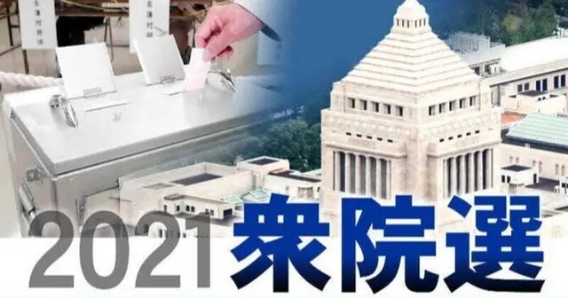
大物議員が続々と敗戦した2021年秋の衆議院選挙…
何が勝敗を分け、人々は何を基準に投票する人を選んだのでしょうか？
選挙に置いて考えるべきこととは一体何でしょうか。
長引く新型コロナウィルスの影響で世界各国の民主主義が危機に瀕しています。
独裁国家がトップダウンで行うロックダウンや経済政策は、今や自由主義の国々の衰退を横目に著しい成長を遂げています。
日本の民主主義は機能不全…この状況を打破するには国民一人一人が賢くなる必要があります。
今月号は作家:佐藤優の著書『16歳のデモクラシー 受験勉強で身に着けるリベラルアーツ』から民主主義とは何かを、高校生たちと一緒に考えていきます。
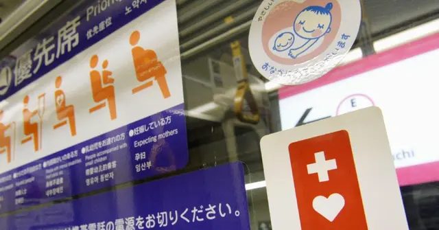
働けないリスクの一つ、障害状態…
私の身近にはそんな人など一人もいないという方は電車やバス、街中で見かける
色々なものが本当に見えているでしょうか。
自分の経験からしか学べない人は、失敗をするまでそれに気づくことが出来ません。
そして取り返しがつかないダメージを受けてしまってからではどうすることもできません。
目先の損得に惑わされず、「歴史から学ぶ」ことの本当の意味を考えてみましょう。
VUCAとOODA、こんなキーワードをご存知でしょうか？
変化の激しい時代において決断が遅い、
いつまでも負のスパイラルから脱却できない日本企業や日本経済。
これからの時代を生き抜くための考え方はすっかり定着しているPDCA？
それともOODA？
変化の激しい時代に資産形成を考えるのに必要な事だとしたら…
あなたはどうする？
2022年10月から75歳以上の後期高齢者で
一定の所得がある方の病院窓口負担が1割から2割に。
財務省は厚労省に対して後期高齢者の高額療養費制度への国庫負担金の廃止、
市区町村から都道府県への移管と制度廃止についての工程化を要望中です。
いよいよ始まった高齢者医療改革…
世界で最も優れていると絶賛された日本の健康保険制度が
いよいよ大きく見直される時期が近づています。
いつから日本は社会保障制度がこれほど浸透し、
あって当たり前のものになったのか。
そこにはかつて日本でも二大政党制で社会の発展と
バランスを取った時代がありました。
幸福度を心理学で考える5要素PERMAと合わせて、
これからの幸せを考えるための近代史を振り返っていきます。
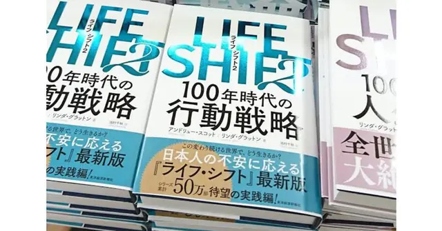
2016年出版の『LIFE SHIFT』は人生100年時代を
世界の人々に気づかせた名著です。
2012年出版の『WORK SHIFT』で予測された2025年がいよいよ迫る中で
2021年11月11日には『LIFE SHIFT2』が出版されました。
働き方と生き方の変化に対する未来予測が、ここには多くの登場人物たちの
ライフストーリーとして描かれています。
2030年代以降に訪れる未来に向けて個人や国や企業はどのようなことを備えて
行くことが求められているのでしょうか？
世界最大のSNS「Facebook」を運営するFacebook社が10月下旬に社名を変更。
英国のSF小説家ニール・スティーヴンスンに登場する仮想世界"Metaverse"に因んで社名をMetaとし、事業の中核もMetaverseに取り組むと発表しました。
そこにはFacebook社が置かれている近年の批判や政治関与、GAFAMの中での独自の立ち位置が関わっています。
また10月25日にはTESLA社が米国企業6番目の時価総額1兆ドルへ到達。
GAFAMT(ガーファムティー)と呼ばれ、販売台数はトヨタ自動車の1/30で時価総額世界一の自動車メーカーとなりました。
AmazonはNASAと協力して宇宙へ、Googleもスマートシティなど自社の強みやビジョンに基づいて事業を多角化。
5年後の2026年、そして100年後の2121年にMeta社はメタバースを実現できるのでしょうか？
「お金」と「金融」の歴史と変遷、
仕組みと考え方についての
note記事をまとめたページです。
私たちが資本主義社会で生きていくうえで欠かすことのできない「お金」。
しかし「お金」について私たちはどれくらい知っているでしょうか。
「歴史」から「お金」を学ぶとは？
「働く」とお金の関係
「暮らす」と住宅ローンの関係
「インフレ」と「デフレ」の関係
「インフレ」と時間の関係
「需要」と「供給」の関係
まずはお金と結びつく私たちの身の回りで起きている
基本となることを学んでいきましょう。
私たちが資本主義社会で生きていくうえで欠かすことのできない「お金」。
しかし「お金」について私たちはどれくらい知っているでしょうか。
「歴史」から「お金」を学ぶとは？
「働く」とお金の関係
「暮らす」と住宅ローンの関係
「インフレ」と「デフレ」の関係
「インフレ」と時間の関係
「需要」と「供給」の関係
まずはお金と結びつく私たちの身の回りで起きている
基本となることを学んでいきましょう。
2022年4月1日、成人年齢の引き下げによって「18歳成人」となりました。
2022年1月に18~19歳へアンケートを取ったところ、成人年齢の引き下げに伴って
一番関心があることとして「クレジットカードの申請」が上位となったそうです。
確かにあると便利なクレジットカード。
ポイントやマイルも貯まり、今や当たり前のようにスーパーやコンビニでも
決済方法として定着をしている感があります。
日本では18歳の多くは高校生・大学生などの学生にあたります。
果たして就職をする前から、クレジットカードを持つことは
本当に必要な事なのでしょうか？
改めて考えるクレジットカードの使い方と、気を付けなければいけないことを
お金の失敗を色々経験した立場からお伝えしたいと思います。
およそ30年近く物価上昇とは縁遠かった日本でも物価上昇の気配が
生活の身近なところで感じられるようになってきました。
あの駄菓子の「うまい棒」でさえ2022年4月出荷分から12円に値上げ！
その他、食料品や石油・ガスなどの値上がりも家計を直撃しています。
世界では物価上昇(インフレ)は当たり前のものだったのに、
日本は何故、30年近い長期にわたって
それを実感することがなかったのでしょうか。
そこには消費者天国ニッポンの悲しい価値観がもたらした悲劇があります。
目先のお得に目がくらんだ消費者が多かったことは、
衰退途上国としての今を作り上げています。
どうしてこんなことになってしまったのでしょう？
今起きている物価上昇の仕組みと日本だけが30年近く取り残された
「デフレスパイラル」のカラクリについて解説します。
復興・高度経済成長・バブル経済と世界第二位の経済大国へ
駆け上がった戦後昭和の日本。
その一方でお金について世界の常識はある時を境に、根底から大きく変化しました。
しかし日本人の「お金」に対する考え方は昔のままでした。
今や日本は家計金融資産2,000兆円時代…
しかし私たちの大切な資産の価値がどんどん毀損していく
リスクの時代に突入しています。
インフレとデフレ、賢い本当の消費者はお金について
どう考える必要があるのでしょうか。
銀行・証券・保険会社
お金に関する窓口は「三大金融」と呼ばれますが、これをグループ分けするとどのように分けることができるでしょうか？
銀行はお金を預けたり、お金を借りたり、
証券はお金を増やしたり、保険はお金を守る…？
実は日本人の多くが、世界の潮流から外れて正しく認識できていない
グループ分けがあります。
そしてお金について本当の信頼できる相談先を見極めるには、
知っているが基本ですが、その先には理解するという大きな隔たりがあります。
日本のFPまたはIFAの大部分は〇〇。
顧客が自分のお金とライフプランを本当の意味で託せる相談先は、
顧客の〇〇が欠かせません。
Writing 2022/05/15
3月に退職を迎えた方の退職金がそろそろ振り込まれる頃、
銀行の店頭などに大きなポスター。
またネット銀行・ネット証券では高金利を謳う
外貨預金・外国債券などのバナー広告を目にする機会も増える頃ですが、
これらの広告にはおかしなところが満載。
退職金を手にするこの季節、銀行員などは猛烈な提案をします。
しかし残念ながらこうした退職金特別優遇プランに
未だまともなものは一つとしてありません。
定年退職を迎えた方も、これから退職後を見据えて資産運用をされている方も
今や知っていて当然の”金融の基礎知識”を散りばめてご紹介。
こういう店頭やネット上で見かける金融商品の何処がおかしいのでしょう？
あなたは賢い消費者ですか？それとも学べる消費者でしょうか？
・退職金特別優遇プランの落とし穴
・始めてはいけないこんな外貨建て預金
・危険な老後資金の資産形成と管理
・本当に信頼できるお金の相談先とは
・あなたの金融リテラシーは何点？
米国中央銀行FRBはコロナ禍の金融緩和と経済再開による
需要反動から起きたインフレーションを抑えるため
3月に25bps(0.25%)、5月には50bps(0.50%)利上げを実施。
金融引き締め(QT)へいよいよ本格的に動き始め株式市場は軟調、
または下落基調の難しい局面が訪れています。
債券(金利)が上がると、株価は下がる
債券(金利)が下がると、株価は上がる
このセオリーと同時に思い起こされるのが
"借入は固定、運用は変動"です。
しかし日本では長らく低金利政策が続き、住宅ローンを期間固定を含む
変動金利での借入が約8割。
金融のセオリーに逆行する日本で、米国の利上げによってじわじわと
固定金利へ借り換えるべきか相談する人も増えています。
既に住宅ローンを変動金利で組んでいる方、これから住宅ローンを検討の方、
また将来住宅購入を検討している方や、
ここ最近は株式に傾倒しがちだった投資市場でに注目を集め始めている
債券投資についての基本をFPとしてではなく、
IFAとして観た場合の住宅ローンと債券投資について解説します。
日本人の住宅ローンの借り方は実は間違っている！？
住宅ローンって実質アレですよね？
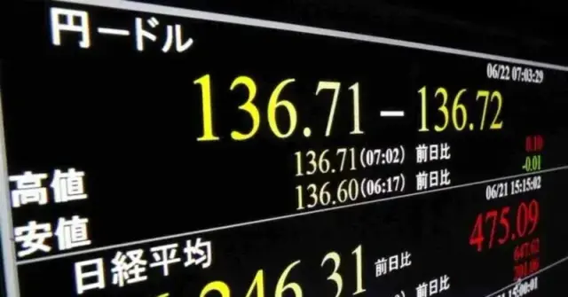
欧米を中心にコロナ禍の量的緩和から量的引き締めに、
大きく舵が切られ、日米金利差の拡大は為替を歴史的な急落が進んでいます。
2022年3月初旬115円だったドル円は、
6月半ばに135円を超え更に円安が進みそうです。
日銀の金融政策はマイナス金利・長期国債の買いオペ(0.25%)の継続から
同にも暫く動きそうにありません。
何故、米国を中心とした先進諸国では利上げを行い、
日本は利上げを行わないのでしょうか？
実はここに日本が30年近くに渡って閉じ込められているデフレと
経済の成長への国民・消費者の理解の違いが表れています。
個人金融資産2,000兆円時代、日本人の意識が変わらないと
日本の経済は復活しない？
1914年に始まった人類初の各国総力戦となった第一次世界大戦。
1918年に流行を始めたスペイン風邪の猛威によって11月11日に停戦。
翌年のパリ講和条約(ヴェルサイユ条約)で終戦を迎え、
そして流行が沈静化した後の1920年代は空前の株高ブームが訪れます。
この時代、投資や資産形成をしている人であれば誰もが聴いたことのある
NYウォール街の一角で靴磨きの少年と銀行家の会話が交わされます。
そしてその年、1929年世界恐慌が起こり、
NYダウが元の水準に回復するのには25年の歳月を必要としました。
素人が投資に興味を持つ時は危険な予兆…
少年との会話から株式市場の過熱感を察して売り抜けたこの銀行家は
世界恐慌の中でアメリカ有数の富裕層へと駆け上がり、
そしてこの物語には投資と未来につながる物語のプロローグでした。
彼は一体何者だったのでしょうか？そして歴史にもたらしたその功績は？
GAFAMT…時価総額1兆㌦を超える巨大IT(ビックテック)企業がけん引した米国株式インデックスバブルは崩壊したのか？
世界で急速に進む物価上昇と利上げは、1970年代に一世を風靡したある相場の隆盛と崩壊を髣髴(ほうふつ)とさせます。
”素晴らしい50銘柄”(ニフティ・フィフティ)と呼ばれた米国を代表する50銘柄…
この銘柄の企業が傾くなんて想像さえできない、一生安泰…
米国が最も米国らしかった1950年代に勃興した企業が華々しく株式市場を彩った時代は何故終わりを迎え、そしてその後「株式投資、死の時代」とまで呼ばれたのか。
そして相場崩壊を尻目に、あの投資家がこの時代を象徴するようにいよいよ登場。彼が何故、巨万の富を築くことが出来た躍進の秘訣は？
株式市場が冴えません。軟調というよりは下落基調が半年近くも続いています。
2022年3月に始まった米国の物価上昇を抑制するための利上げが
急ピッチで進められ、コロナ禍となった2020年3月以来のゼロ金利政策が終了。
中央銀行がコントロールする政策金利(短期金利)が上がるにつれて、市場の需給で金利が決定する長期国債(10年)も6月までは連動して上がりましたが、7月には政策金利が上がっても、長期金利は上昇しませんでした。
長短金利が逆転すると景気後退のシグナルと判断されるため
寸前ギリギリまで接近してきています。
また米10年債の心理的な節目である3.00%に到達したことで、
「株式」と対になる伝統的な投資対象「債券」と
それを扱う「一時払外貨建保険」に注目が集まっています。
しかし株式中心の積立投資の流行の陰で、債券投資について良く理解していない
個人投資家も少なくありません。
債券投資はどのような仕組みで、どのような魅力とリスクがあるのでしょうか？
本記事は債券投資の基礎からリスク、またFPやIFAの中には相談者の無知を
利用して手数料を荒稼ぎをするマネーショップや窓口もあります。
彼らが債券を提案する時、投資家は何処に注目するべき点。
有料セミナーでお話しする内容をテキスト化した内容までをお届けします。
為替の変動がこれほどの短期間に円安方向に大きく振れたのを
記憶している方は今や殆どいないかもしれません。
2022年3月初旬115円前後だった為替水準は、
ほぼ四半世紀ぶりとなる140円台目前まで迫った後で130円台まで振り戻しました。
脱コロナ後を見据えた2021年後半からの世界的なインフレーションの加速、
2022年2月に始まったロシア・ウクライナ危機による資源高、
これらを封じ込めるための米国の利上げ、そして量的引き締め(QT)の実施に釣られて
日本以外の先進国の中央銀行も相次いで政策金利を引き上げています。
これに日本も追随して利上げをするべきだ、日銀黒田総裁の発言に批判的な意見が
メディア・SNSなどでは散見されますが、これは相当な経済音痴の発言です。
私は日本は政策金利を引き上げられる段階にないと考えています。
目先のことに右往左往して大局を見誤れば、現在の日本は取り返しのつかない
大不況へ転落しかねない薄氷の上に成り立っています。
為替の将来予測は難しい、誰にもできない…と言われる中で
今後の為替はこれまでの経験則があてにならない時代に突入しています。
為替は何故、変動するの?これから為替はどう動くの?
ここには政府、中央銀行、そして経済全体に関わる大きな
対立する結論の出ていない問題が潜んでいます。
まだガス探知機が作られる前、炭鉱に潜る人々はカナリアを鳥かごに入れて連れて行っていたと言います。
ガスや崩落などの機器を察知すると囀るのを止めるカナリア…
「炭鉱のカナリア」は現在の経済における危険探知の代名詞となっています。
為替の急変、日本のカナリアさえもが見誤った2022年3月以降の急速な円安…
あのアップルは9月の新商品発売を控えている7月に現行のiPhone/iPadなどの
販売価格を大きく見直しました。
ここから見えて来るアップルが想定している為替レートは
これまでの130円台後半から今や140円台後半～150円台後半!?
本当にここまで円安になるの？
為替の役割と関税、専売公社、固定相場と変動相場制など
資産形成にも欠かすことが出来ない基礎、
通貨と為替を考えるうえでの基本を改めておさらいします。
2022年3月以降の急激な円安が進み、食料・エネルギーなど身近な物の価格にも
その影響が反映されつつあります。
2022年上半期の値上げラッシュは原材料費などそのものの値上げ、
しかし下半期の値上げラッシュはここに織り込まれなかった為替の急落を反映しての値上げと性質が異なります。
こうした状況を踏まえ、日本の金融政策が当面は現状維持だろうと考え、円を売ってドルを買う人が増えることでマネーフライト(資金逃避)が加速し始めています。
ドル円の為替はどこまで進むのか…
「資産防衛」とも呼ばれ一定比率の外貨資産を持つことが効果的とされますが、
そんな中で外国為替証拠金取引、通称FXと外貨預金に注目が集まっているそうです。
良く分からないけれど「預金」と付いて安心そうな「外貨預金」が何故危険？
実はFX以下の金融商品が「外貨預金」…
そしてFXは初心者が絶対に手を出してはいけない金融商品です。
今回は私の20代の頃の失敗談の一部を交えながら、これらの金融商品がどうしていけないのかを解説します。
ある日、某大手ネット証券が破綻するのではないか？という噂が
Twitter上で飛び交いました。
この噂はある投資家の早合点だったのですが、
株・債券・投資信託…ネット上では
自分が資産を運用している証券会社がもし破たんしたらと慌てふためく
人々の反応で溢れていました。
この反応は証券投資の仕組みを如何に多くの個人投資家が
学んでいないかを露呈させると共に、
銀行・証券・保険会社の保護体制を再確認する良い機会だと思います。
1973年12月、愛知県にある豊川信金に就職が決まった女子高生たちの何気ない一言から噂があっという間に広がって銀行に人々が大挙して押し寄せる取り付け騒ぎが起こりました。
何故、銀行預金は1000万円まで保護されるのでしょうか？
その仕組みと理由は？
保険・証券の保護制度の仕組みとは？
保護対象にならない金融商品や取引はどんなものでしょうか？
中国は派遣国家アメリカをやがて追い越すかもしれないと多くのメディアはその急成長ぶりを持ち上げていましたが、今や人口減少・超少子高齢化が足枷となり衰退期に入ったとさえ囁かれる事に。
中でも危惧されているのが中国のGDPの3割を占める不動産業における乱開発。
人口14.3億人の中国において、34億人分のマンション建設をしてしまい、
各地に建設途中で放棄された場所が溢れています。
『ガイアの夜明け』でも中国人が日本の不動産を大金で即決して買いあさる様子が放送され、大都市圏だけでなく北海道も中国人が押し寄せ不動産購入ツアーが頻繁に行われています。
中国人は何故、不動産にここまで熱狂するのか。そして中国の不動産バブル崩壊と日本のバブル崩壊の類似性や特殊性、
2024年1月から始まる[新しいNISA]に向けて2024年世界最大の人口大国となったインドやASEAN地域など改めて注目を集める新興国投資における「カントリーリスク」の再確認を、私の20年前の投資の失敗経験を交えてお伝えします。
年金制度、健康保険制度、介護保険制度、労災保険制度、雇用保険…
日本には5つの社会保障制度(強制保険)があり、私たちが暮らしをしていく上での重要な基盤の一つとなっています。
毎月、決して安くはない保険料を負担している訳ですからそれぞれがどんな制度なのか。どんな時に活用できるのかを理解しておくことは、どれくらいの預貯金を手元に置いておく必要か。
本記事では給与明細から読み解く「社会保険」の仕組みと役割を解説します。
「世界株式に投資をすれば資産が増える…」
リーマンショック以降、世界中で初心者投資家たちの間で囁かれてきたこうした
ミーム(ネット上の噂・口コミなど)はそれを裏付けるように近年の株高を下支えしてきたように思えます。
その一方でロンドンスクール・オブ・エコノミクス(LSE)名誉教授チャールズ・グッドハートとモルガン・スタンレー元役員マノジ・プラハーンによって2020年8月に出版された共著『THE GREAT DEMOGRAPHIC REVERSAL』ではこれまでの世界経済の成長エンジンが、今後は逆回転を始めることを警告し始めています。
・株式投資冬の時代の到来
・世界株式インデックス運用の大前提が崩壊間近
・長期/分散/積立投資(ドルコスト平均法)の失敗懸念の顕在化
今、そしてこれからの世界に一体何が起きるというのでしょうか？
世界中の中央銀行や金融機関、資産運用に関わる多くの人が血眼になって読んでいるこの一冊には一体どんなことが警告されているのでしょうか。
保険についての考え方や分かりづらいとされていること、
よくあるご質問など解説するnote記事をまとめたページです。
1666年9月2日未明、ロンドン市内の一角にあったパン屋から出火した火は
あちこちに飛び火して当時のロンドン市街地の85％を消失させる大火災に。
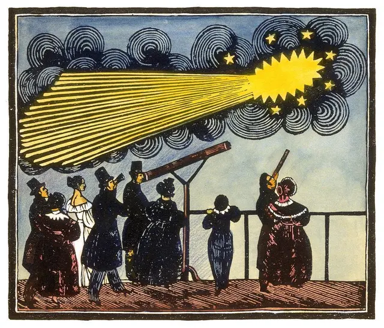
古代から保険という仕組みは教会などの互助会として度々登場しては、
加入者間の不公平を解消できずに破綻を繰り返してきました。
手違いで誕生日を過ぎてしまった…
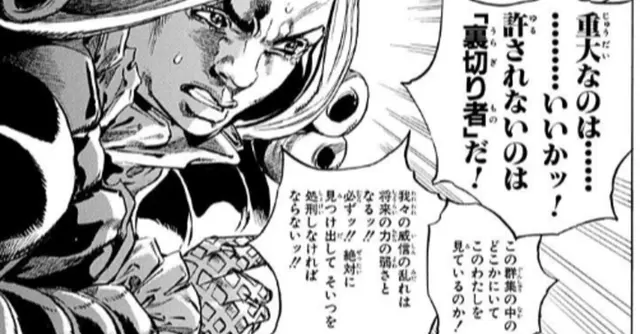
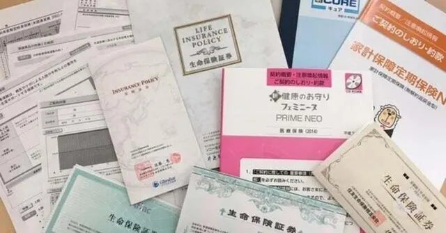
給与所得者の場合、給与明細書から健康保険、介護保険、厚生年金、雇用保険…4つの社会保険料が給与天引きされています。
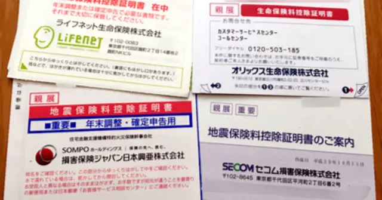
資産形成ブームと呼んでも過言ではない時代、
初心者投資家がこぞって「iDeCo」が良い、「つみたてNISA」が良いと
メリットに眼がくらんだようにお金と投資のことをきちんと学ばずに
投機に傾倒しつつあります。
火災保険は自然災害の頻発に伴って2022年10月以降の新規契約・更新に関して、
これまでの10年契約が廃止され、最長5年契約となります。
戸建てであれマンションであれ、「持ち家」を持っている人にとって大切な資産。
火災保険の世帯加入率82.0％(2021年度)ですが、地震保険の世帯加入率は34.6％と大きな開きがあります。
これを見て地震保険は勿体ないと加入を見送る人もいますが、
火災保険と同時加入である地震保険の付帯率を見ると69.0％と約7割に迫ります。
地震保険は火災保険と同時加入だけでなく、火災保険の30～50％や建物5000万円、家財1000万円までなど補償の上限も厳しく設けられている上に「全損」「大半損」「小半損」「一部損」など請求時の区分も分けられていてわかりにくいとも指摘されています。なぜ地震保険は現在のような形をとっているのでしょうか？
地震保険単独で加入ができない理由や、加入時に知っておきたい地震保険での請求時に役立つヒントをまとめました。経済と金融の仕組みの結実が現在の地震保険につながっています。一体、地震保険ってどういう仕組みなのでしょうか？
近年、CMなどで毎日のように流れている通販型・ダイレクト型自動車保険。
保険料の安さや手軽な手続き方法、インターネット割引などの特典に
魅力を感じる方も少なくないかもしれません。
ところで通販型またはダイレクト型などの自動車保険、大手保険会社や損保代理店の提案する自動車保険と比べてどこがどれくらい違うのでしょうか？
私たちの社会が近現代において急速な発展を遂げた大きな原動力になったのが産業革命によるモノづくりの生産性向上だけでなく、物流・運搬・輸送などの自動車の発明によるところが大きいのは言うまでもないでしょう。
医療の進歩は日進月歩…
病気の発見がわずか2～3年違っただけでその後の余命や
生活の質(QOL)に大きく影響することも少なくありません。
インターネット上で無数にあふれているブログやYouTubeなどの情報…
これらの殆どはエンターテインメントであって、
教育でもなければ知恵の宝庫でもありません。
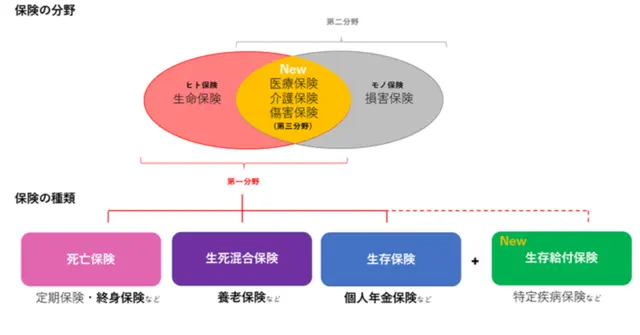
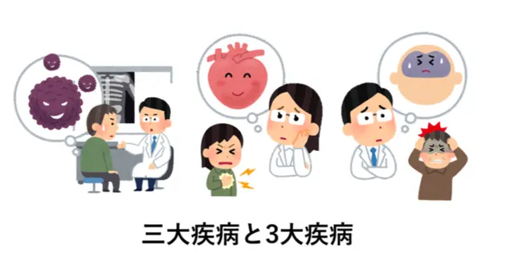
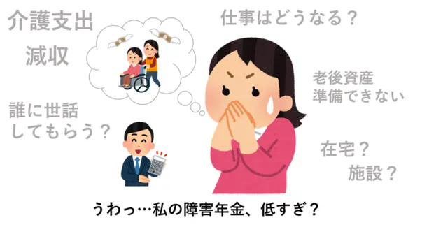
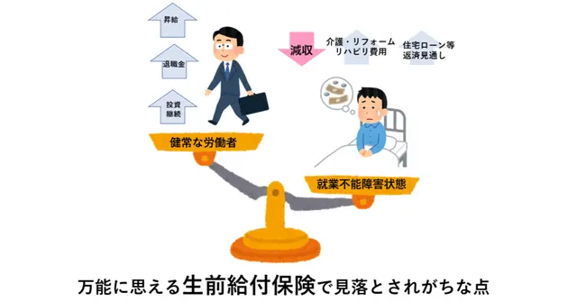
子どもの教育資金の積み立てに資産形成にiDeCo(個人型確定拠出年金)や
NISA・つみたてNISAを活用しようとする方がいます。
税制優遇制度は確かに活用したい制度の一つですが、
子どもの教育資金準備としてFP・IFAとしてはオススメができない理由があります。
死亡保障に同額で保障されている「高度障害」保険金
余命6か月…
近年はクレジットカードに無料付帯している補償で旅行中のトラブルなどに備えられる海外旅行保険ですが、損害保険会社が提供する「海外旅行保険」とはどう違うのでしょうか？
コロナ禍も落ち着き、海外旅行に出かけられる方も決して珍しくなくなってきましたね。ところで海外旅行の際にクレジットカードに付帯する「海外旅行保険」だけでは不十分なのでしょうか？
クレジットカード付帯の補償を受けるための利用条件の例や、海外旅行における思わぬ支出などについて実際の事例を参考にまとめてみました。
・海外でかかる高額な治療費例
・お風呂に入ろうとして…1200万円!?
・スマホを充電しようとしただけなのに!?
・手荷物等の破損・盗難
「死」は、いつか必ず誰にでも訪れる不可避のもの。
あなたの身近な人に介護が必要な人はいますか？
50代になると10人に1人は親の介護に直面するとされています。
Aさんは脳卒中で緊急搬送され入院。一命を取り留めたものの手足の麻痺が残りました。手術・入院から2週間が経つと病院からもうできることはないから退院してほしいと告げられ、介護療養型医療施設へ入所することになりました。
先日、夜中にどんどん痛みが増して救急車で運ばれました。
まさに死ぬ苦しみと言われるアレでFPが入院を経験…
最近の医療事情と加入している医療保険を何年も放置していては対応できなくなることを身を持って体験しました。
iDeCoやNISAなどの税制優遇制度が拡充されて投資・資産形成に多くの日本人が注目をするようになった一方で、金融庁を中心に「積立投資」で資産形成をする人が増えています。
資産形成を考えるうえで多くの人が注目している運用手段として、ソニー生命やアクサ生命の運用する変額保険・変額個人年金があります。
これらは証券会社ではなく、保険会社経由で投資信託による投資を行う仕組みで、近年はインデックスファンドも取り入れていますが、大部分の人が選択している運用先はアクティブ運用です。
今や「人生100年時代」というキーワードは資産形成と切っても切れない関係として認識されていると思いますが、iDeCoやつみたてNISA(新NISA)などで同時に広く認識されるようになった「積立投資」を日本に根付かせたのは証券業界ではなく、生命保険業界だったのではないでしょうか。
iDeCoやNISAなど証券における資産形成と、保険における資産形成で決定的に異なるのは「保険」機能をどのように活用するのかという点です。
死亡保障などの保険金としてお金を確保するのはその一つにすぎず、
近年ではプランごとに定めた所定の条件に該当すると以後の保険料払込が免除になる保障も大きな支持を集めています。
証券と保険における資産形成は、その人がどれくらいのリスクを許容できるのか。
投資や資産形成について学べるのかの違いでもあります。
BACK NUMBER — 年別バックナンバー
セミナー受講生・クライアントへ配信している継続学習用メールマガジンのバックナンバーです。
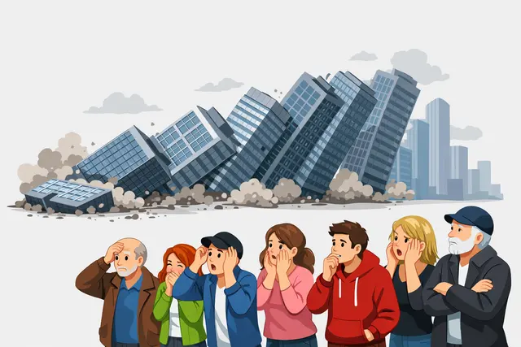
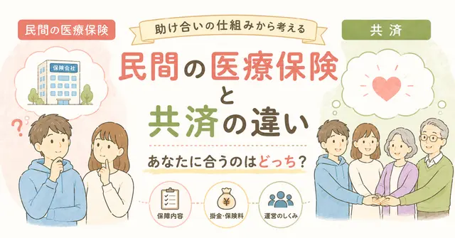
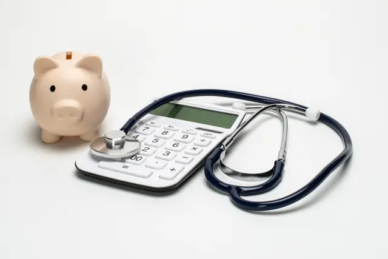
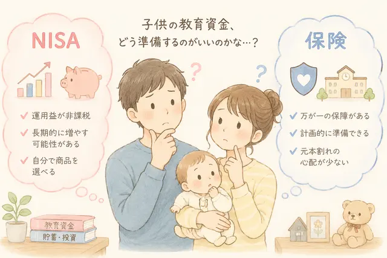
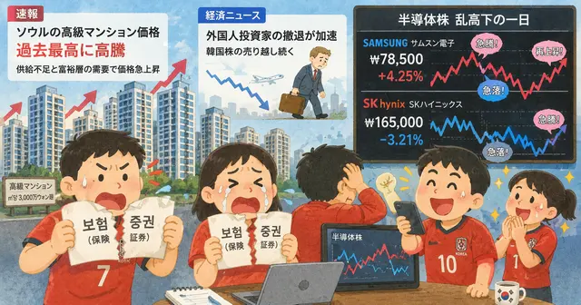
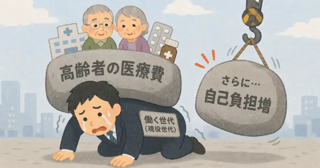
MAGAZINE — マガジン・定期購読
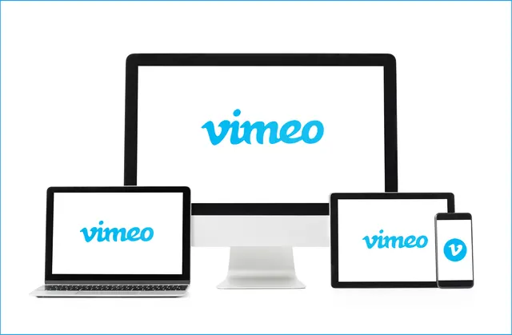